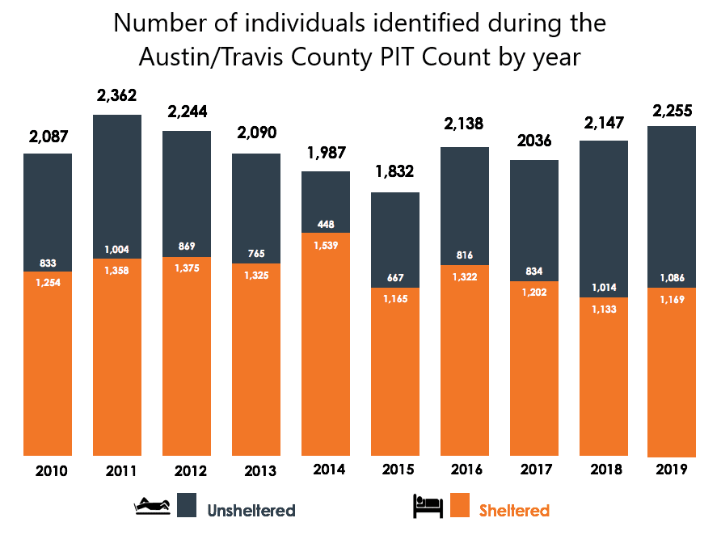

Hello, we are a Code2College group that is focused on talking about the issues of homelessness around Austin. The 2019 Point in Time Count showed that there were 2,255 people experiencing homelessness on a single day in Austin. Also, according to KVUE, the homeless population growth rate is 28.2%, which is over double Austin's total population growth rate (12.4%).

We created an 8 question survey that would help with formulating our plans and goals as we move forward with possible solutions. This survey was distributed to people who live in the South Austin area. Some of the data collected is shown in the graphs below:
Depending on the utilization rate and how valuable people find this map, we may improve and expand the area. We will be looking for any feedback from people and all organizations, including schools, businesses, churchs, non profits, etc.